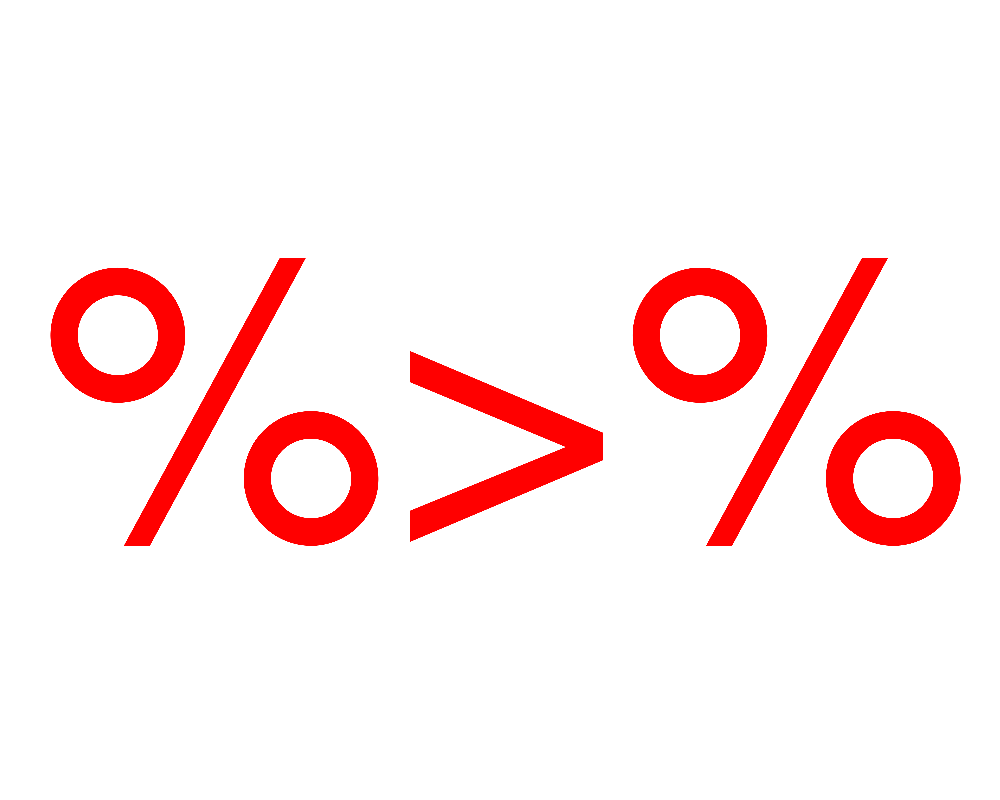

A short description of the post.

This was a topic suggested by Emily who is nearing the end of her PhD on the YP-CORE as you can see from her/our RG pages about the PhD here . (More about the YP-CORE here and the CORE system here.) She and I have been on a learning curve moving from base R (https://www.r-project.org/) to increasing use of the tidyverse (https://www.tidyverse.org/) developments of R.
It’s this sort of thing.
data %>%
group_by(gender) %>%
summarise(n = n(),
minAge = min(age),
meanAge = mean(age),
maxAge = max(age))To me the idea of piping comes out unix/linux where you can pipe the output of one command into another, for example:
find . -name filename.here -printf "%T@ %Tc %p\n" | sort -nThe pipe operator in linux is the vertical line “|” and what happens is the text output from the linux find command is fed straight into the sort command to give a sorted list of files matching “filename.here”.
I think “piping” in R is a bit different (hence some in jokes: piping was introduced into R through a package [magittr](https://cran.r-project.org/web/packages/magrittr/vignettes/magrittr.html, and also. The “magittr” name was a lovely play on the famous print by Magritte which said firmly Ceci n’est pas un pipe (this is not a pipe) and depicted … a pipe.
Coming back to that R code I showed above …
data %>%
group_by(gender) %>%
summarise(n = n(),
minAge = min(age),
meanAge = mean(age),
maxAge = max(age))That assumes you have a data frame or tibble named “data” and that it has variables gender and age within it. The “%>%” “pipes” those data to the next command, group_by() which in turn pipes the data, now grouped by gender into a four line command, summarise(). That creates a new tibble with four variables each with their one value, for each value of gender.
This is so well described by Shannon Pileggi in her page https://www.pipinghotdata.com/posts/2018-11-05-welcome-to-piping-hot-data/ that if you use R but so far haven’t used piping, go and look at her page and then come back here.
At first I wasn’t convinced by piping. That was partly because I thought the documentation I found wasn’t terribly clear (it has improved greatly) and didn’t convince me that the new syntax, new way of sequencing instructions, was worth the learning curve. It was also because it was, by the time I found it, very bound in with what has become the tidyverse in R: a lot of other, sometimes really quite radical, changes from base R. To me it felt like having to learn a new language and I’m neither a good linguist nor a good programmer.
However, I have become a convert. I still sometimes go back to what I think of as “classical R”, I still sometimes find there are things I can do more easily with lists and lapply() and its relatives. That’s particularly true when my data isn’t rectangular or a relational data structure of linked rectangular sets of data. If I have a data on the members of families and the data may differ between the members and the families and the relational structures are messy, I will probably use lists and lapply(). However, the vast majority of the data I work with is, or can be, “tidy”. A very common example for me is to have an ID and some demographics per participant, and then answers from each participant on items of one or more questionnaires where every participant may have more than one set of responses. Here the data is a relational rectangular structure one rectangular structure with one row per participant then one or more rows in another rectangular structure for each time they completed the questionnaires with the ID codes enabling us to link the two.
Long, long ago, when I used SPSS, I was very uncomfortable if I had to handle single rectangular data structures and I would have handled that by having one “wide” file with one row per participant and multiple sets of responses by questionnaire going off to the right and added to for each new completion. That’s doable when you might only have two completions per participant but when you have many per partipant, and numbers perhaps varying from one completion to hundreds, then that becomes a terrible structure.
Of course, classical R handles structures like this fine. That was one thing that helped me move from SPSS to R (a minor contributor but certainly there in the long list). However, I didn’t shake of some uncertainty with my data handling as handled data linking across data frames.
Now I have moved to piping and the tidyverse the effect for me has been liberating. I no longer think of data as having to be in a single rectangle, it’s become entirely natural to handle it in a series of linked data sets. I use the tidyverse tibbles: a fundamental building stone in the tidyverse and in many ways a relatively minor extension of the data frame in R. One difference from a data frame is that the default print function for a tibble only prints the first ten rows where the default print function for a data frame would try to print all of it, or until you run out of console lines. At first that seemed an annoyance until I started to use that printing to build what you want iteratively.
In what follows I haven’t folded the code away partly as I wanted to give a bit of the experience of writing code iterative, starting usually with one line and building on that.
OK, let’s simulate some data
library(tidyverse) # get the main packages of the tidyverse
### that gives us the pipe operator "%>% and as_tibble and
### a few other things I use below
### the piping tools I'm using are in the dplyr package which
### is within the set of packages called by the tidyverse "superpackage"
set.seed(12345) # get replicable data
n <- 500 # n(participants)
### create some demographics
### start by giving each participant a gender ...
list(gender = sample(c("M", "F"), n, replace = TRUE),
age = sample(11:18, n, replace = TRUE), # and an age
### and now a number of questionnaire completions
nCompletions = sample(1:30, n, replace = TRUE)
) %>% # and pipe that list forward to convert it to a tibble
as_tibble() %>%
### now use a piping trick, mutate() does something to each row
### here a new variable, ID, is created and given the value of
### the row number of each participant, i.e. 1:n
mutate(ID = row_number()) -> tibParticipants # give that tibble a nameNow if I want to understand what I’ve created I just type its name:
tibParticipants# A tibble: 500 × 4
gender age nCompletions ID
<chr> <int> <int> <int>
1 F 11 8 1
2 M 11 30 2
3 F 15 8 3
4 F 13 2 4
5 F 13 12 5
6 F 15 20 6
7 F 15 6 7
8 M 18 4 8
9 M 11 30 9
10 F 14 15 10
# ℹ 490 more rowsInstead of showing me all 500 rows, I just get the top ten (like using head(dataFrame) in classical R) but I also get pretty much everything else I need to know about the data. Had there been too many variables to fit on the screen the listing would have ended with a line giving me the names of all the variables that wouldn’t fit on the screen.
tibParticipants %>%
select(ID, nCompletions) %>% # get just the ID codes
### I confess that I always have to look up uncount():
### I can never remember the name, let's just stop there
### and see what it did ...
uncount(nCompletions) # A tibble: 7,679 × 1
ID
<int>
1 1
2 1
3 1
4 1
5 1
6 1
7 1
8 1
9 2
10 2
# ℹ 7,669 more rowsOK, it’s replicated each ID value by the value in the variable nCompletions. Good, that’s what I wanted. Imagine I’m doing this interactively at the console …
tibParticipants %>%
select(ID, nCompletions) %>% # get just the ID codes
uncount(nCompletions) %>%
group_by(ID) %>%
mutate(nCompletions2 = n(),
### that gets me the number of completions per ID
### (which is just getting back to nCompletions in
### tibParticipants)
completionN = row_number()) %>%
### that gets an index number for each completion
### of the questionnaire ...
### it's a very short questionnaire and so badly
### designed the item are uncorrelated answers
### between 0 and 5) ...
mutate(item1 = sample(0:5, nCompletions2[1], replace = TRUE),
item2 = sample(0:5, nCompletions2[1], replace = TRUE),
item3 = sample(0:5, nCompletions2[1], replace = TRUE),
item4 = sample(0:5, nCompletions2[1], replace = TRUE),
item5 = sample(0:5, nCompletions2[1], replace = TRUE))# A tibble: 7,679 × 8
# Groups: ID [500]
ID nCompletions2 completionN item1 item2 item3 item4 item5
<int> <int> <int> <int> <int> <int> <int> <int>
1 1 8 1 5 4 1 4 0
2 1 8 2 5 1 2 4 2
3 1 8 3 5 1 0 3 5
4 1 8 4 0 0 0 2 0
5 1 8 5 2 1 1 1 2
6 1 8 6 5 1 4 3 3
7 1 8 7 0 3 3 4 4
8 1 8 8 2 5 4 0 1
9 2 30 1 4 1 5 1 2
10 2 30 2 4 0 0 0 3
# ℹ 7,669 more rows### little note here, that used to work with just:
### item1 = sample(0:5, nCompletions2, replace = TRUE)
### instead of what I have now:
### item1 = sample(0:5, nCompletions2[1], replace = TRUE)
### i.e. I didn't have to instruct sample() to just use the first value for nCompletions2
### for each group
### now R throws an error "! invalid 'size' argument"
### it took me a good few minutes to work out that the error messages was, perhaps very reasonably
### complaining that it didn't know how to handle a vector for its size argument
### I assume it used to default silently just to use the first element of the vector if given a
### vector for size
### This little historical diversion illustrates a number of things
### 1. R does change and even very, very old and tested base functions like sample() can become
### more demanding about their arguments
### 2. Sadly, I don't think the error messages R throws are always as helpful as they might be
### and this can bite you if you're not a programmer or very used to terse error messages
### 3. More constructively, this is a reminder that the default behaviour of summarise() or of
### mutate() is using variables as vectors, not as single values, one per row
### If you want variables to be handled row by row, as single values, you need to use the
### particular version of group_by(): rowwise() which groups by row. I'll come to that in
### another post here.
### But really it was sloppy code writing by me not to have trusted sample() to have just
### used the first value if given a vector (of length > 1) for an argument expecting a single
### value!OK. Looking like what I wanted so just put it into a tibble.
tibParticipants %>%
select(ID, nCompletions) %>% # get just the ID codes
uncount(nCompletions) %>%
group_by(ID) %>%
mutate(nCompletions2 = n(),
### that gets me the number of completions per ID
### (which is just getting back to nCompletions in
### tibParticipants)
completionN = row_number()) %>%
### that gets an index number for each completion
### of the questionnaire ...
### it's a very short questionnaire and so badly
### designed the item are uncorrelated answers
### between 0 and 5) ...
mutate(item1 = sample(0:5, nCompletions2[1], replace = TRUE),
item2 = sample(0:5, nCompletions2[1], replace = TRUE),
item3 = sample(0:5, nCompletions2[1], replace = TRUE),
item4 = sample(0:5, nCompletions2[1], replace = TRUE),
item5 = sample(0:5, nCompletions2[1], replace = TRUE))%>%
### this can catch you out, if you have used group_by()
### before a mutate, the data stay grouped which is
### probably not what you want so ungroup(),
### rowwise() is just a particular group_by() but
### grouping by row so that variables are treated
### by each individual value, not as vectors
ungroup() -> tibQuaireDataNow I want to join the demographics back into that so …
# A tibble: 7,679 × 11
ID nCompletions2 completionN item1 item2 item3 item4 item5
<int> <int> <int> <int> <int> <int> <int> <int>
1 1 8 1 4 1 0 5 2
2 1 8 2 0 1 1 2 5
3 1 8 3 1 3 5 3 5
4 1 8 4 5 3 5 4 1
5 1 8 5 0 1 2 3 4
6 1 8 6 0 1 5 0 2
7 1 8 7 2 4 1 1 3
8 1 8 8 3 1 4 5 4
9 2 30 1 0 0 0 0 5
10 2 30 2 2 5 1 3 0
# ℹ 7,669 more rows
# ℹ 3 more variables: gender <chr>, age <int>, nCompletions <int>I didn’t actually have to put the by = "ID" argument in there as left_join will join every row in tibQuaireData to any row with a matching value in any variable shared between tibQuaireData and tibParticipants and in my little example the only shared variable is ID. OK, that’s looking good.
tibQuaireData %>%
left_join(tibParticipants, by = "ID") %>%
### I will change the order of the variables,
### this order seems better to me
### everything() picks up any variables not already named as we see
select(ID, gender, age, nCompletions, nCompletions2,
everything()) # A tibble: 7,679 × 11
ID gender age nCompletions nCompletions2 completionN item1
<int> <chr> <int> <int> <int> <int> <int>
1 1 F 11 8 8 1 4
2 1 F 11 8 8 2 0
3 1 F 11 8 8 3 1
4 1 F 11 8 8 4 5
5 1 F 11 8 8 5 0
6 1 F 11 8 8 6 0
7 1 F 11 8 8 7 2
8 1 F 11 8 8 8 3
9 2 M 11 30 30 1 0
10 2 M 11 30 30 2 2
# ℹ 7,669 more rows
# ℹ 4 more variables: item2 <int>, item3 <int>, item4 <int>,
# item5 <int>OK, I’m working at the console (well actually, in a file and running the lines each time I finish tweaking them) so now assign that.
tibQuaireData %>%
left_join(tibParticipants, by = "ID") %>%
### I will change the order of the variables,
### this order seems better to me
### everything() picks up any variables not already named as we see
select(ID, gender, age, nCompletions, nCompletions2,
everything()) -> tibQuaireDataNow I can do simple things with the data exploring it. I am going to stick to simple things that can be done just using pipes and dplyr.
### gender breakdown of age
tibQuaireData %>%
group_by(gender) %>%
summarise(n = n(), # gives the number of rows within the gender grouping
### n_distinct() like length(unique()) in classical R,
### gives number of distinct values of ID
nParticipants = n_distinct(ID),
minAge = min(age), # minimum age within the gender grouping
meanAge = mean(age), # ... similarly!
sdAge = sd(age),
maxAge = max(age))# A tibble: 2 × 7
gender n nParticipants minAge meanAge sdAge maxAge
<chr> <int> <int> <int> <dbl> <dbl> <int>
1 F 3765 249 11 14.7 2.35 18
2 M 3914 251 11 14.6 2.33 18Now I want to check the range of responses on the items. This introduces the across() selection and within it the starts_with(). They pretty much do what their names suggests. There is also an ends_with() selector. I could also have used item1:item5 as the colon gives all the variables from the left hand side to the right hand side, i.e. here from item1 to item5.
tibQuaireData %>%
summarise(across(starts_with("item"), # that was the selector,
# explained above, now we want done with those variables ...
list(min = min, max = max)))# A tibble: 1 × 10
item1_min item1_max item2_min item2_max item3_min item3_max
<int> <int> <int> <int> <int> <int>
1 0 5 0 5 0 5
# ℹ 4 more variables: item4_min <int>, item4_max <int>,
# item5_min <int>, item5_max <int>OK, so the full range of scores was used for every item (doh!). Not the most obvious way to show that so that introduces pivoting. I think the name came from its use in spreadsheets but pivot_longer() and pivot_wider() give lovely control over converting data from wide to long (pivot_longer() … doh!) and pivot_wider() does the opposite.
tibQuaireData %>%
pivot_longer(cols = starts_with("item"))# A tibble: 38,395 × 8
ID gender age nCompletions nCompletions2 completionN name
<int> <chr> <int> <int> <int> <int> <chr>
1 1 F 11 8 8 1 item1
2 1 F 11 8 8 1 item2
3 1 F 11 8 8 1 item3
4 1 F 11 8 8 1 item4
5 1 F 11 8 8 1 item5
6 1 F 11 8 8 2 item1
7 1 F 11 8 8 2 item2
8 1 F 11 8 8 2 item3
9 1 F 11 8 8 2 item4
10 1 F 11 8 8 2 item5
# ℹ 38,385 more rows
# ℹ 1 more variable: value <int>### "name" and "value" are the default names for the variables
### created by pivoting but you can override them ...
tibQuaireData %>%
pivot_longer(cols = starts_with("item"),
names_to = "item",
values_to = "score")# A tibble: 38,395 × 8
ID gender age nCompletions nCompletions2 completionN item
<int> <chr> <int> <int> <int> <int> <chr>
1 1 F 11 8 8 1 item1
2 1 F 11 8 8 1 item2
3 1 F 11 8 8 1 item3
4 1 F 11 8 8 1 item4
5 1 F 11 8 8 1 item5
6 1 F 11 8 8 2 item1
7 1 F 11 8 8 2 item2
8 1 F 11 8 8 2 item3
9 1 F 11 8 8 2 item4
10 1 F 11 8 8 2 item5
# ℹ 38,385 more rows
# ℹ 1 more variable: score <int>### now just group and get min and max
tibQuaireData %>%
pivot_longer(cols = starts_with("item"),
names_to = "item",
values_to = "score") %>%
group_by(item) %>%
summarise(minScore = min(score),
maxScore = max(score))# A tibble: 5 × 3
item minScore maxScore
<chr> <int> <int>
1 item1 0 5
2 item2 0 5
3 item3 0 5
4 item4 0 5
5 item5 0 5Much easier to read that way around.
These have been trivial examples but they’ve introduced some of the fundamental powers of piping using the dplyr package in the R tidyverse. They grew on me and now, as I said at the beginning, they are how I do pretty much all my data manipulation and analyses. There was certainly a learning curve for me and I guess my conversion to piping really happened through 2020. The advantages I have found are:
the iterative building of code to do what I want, that I’ve tried to illustrate above, feels a very easy way to write code: you see the output of each step and build things step by step
I am sure this has meant that I am writing better code, faster, with fewer mistakes
the method is very similar to creating graphics with the ggplot2 package and ggplot() so my conversion to working with pipes was perhaps helped by a slightly earlier decision to move from classical R graphics to ggplot() and I find the two complement each other … but I do occasionally forget that the piping operator in ggplot() is “+”, not “%>%”!
I find code I wrote this way far, far easier to read when I come back to it after time has passed
I think piping, and particularly pivoting, have really helped me break old “SPSS thinking” and made me comfortable with relational data structures
These really have been trivial examples, I’ll be making up pages here illustrating more complicated and much more powerful aspects of piping and the tidyverse over the months ahead.